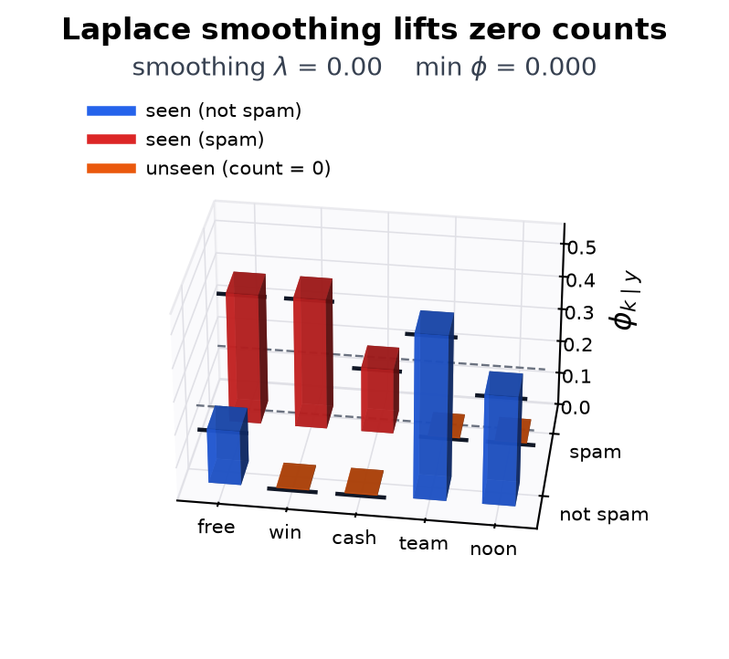
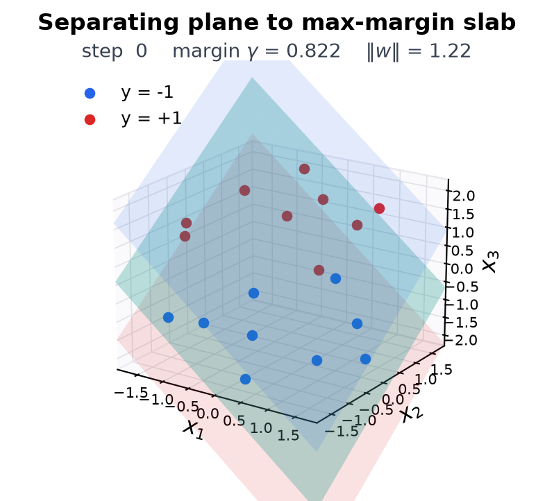
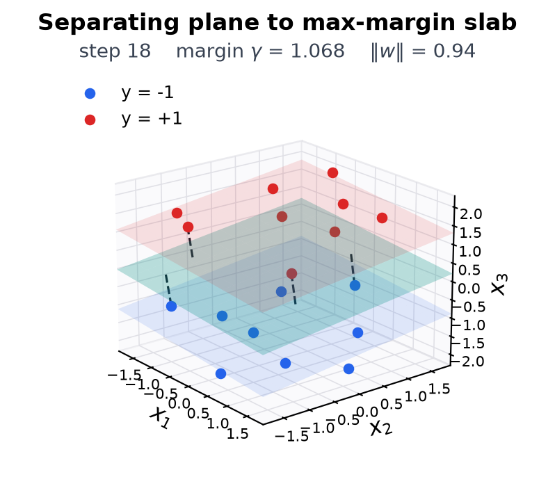
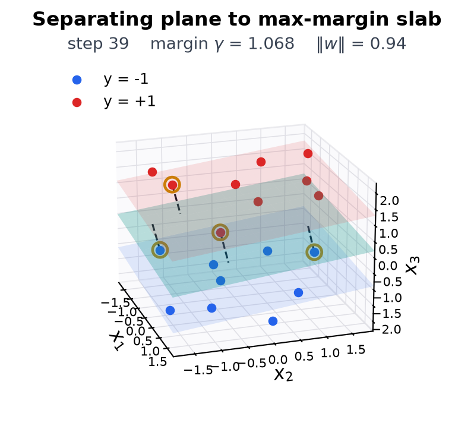
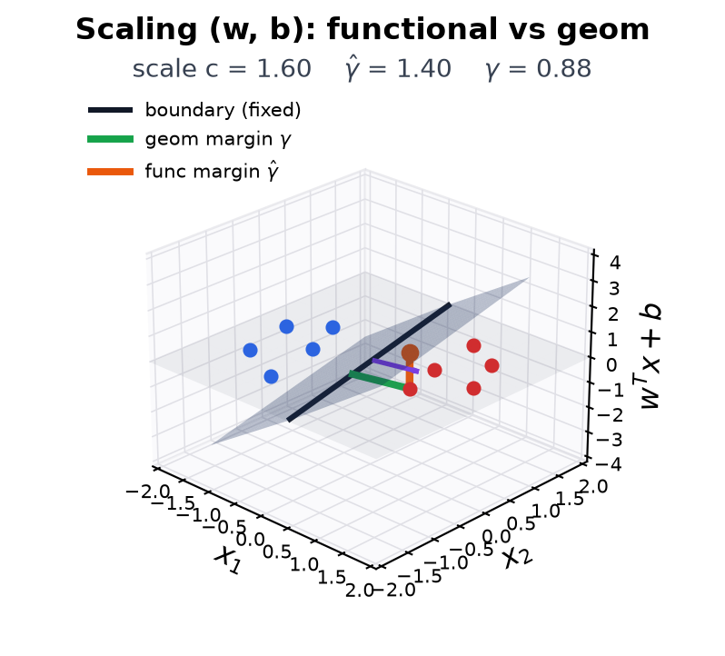
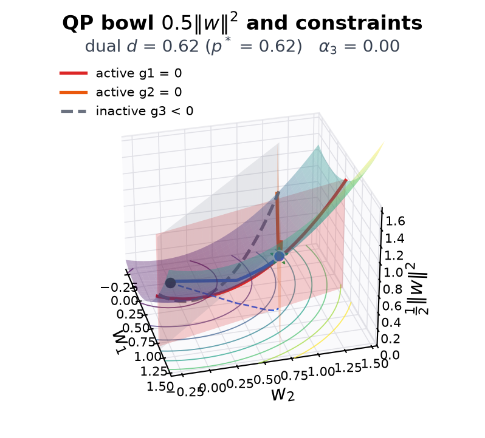
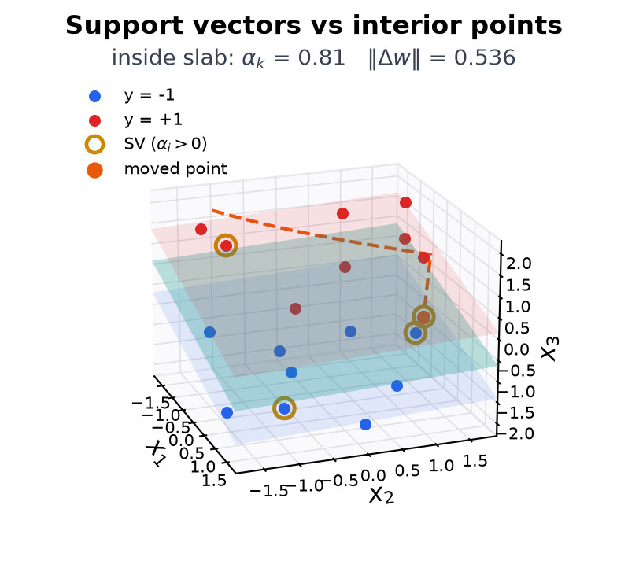
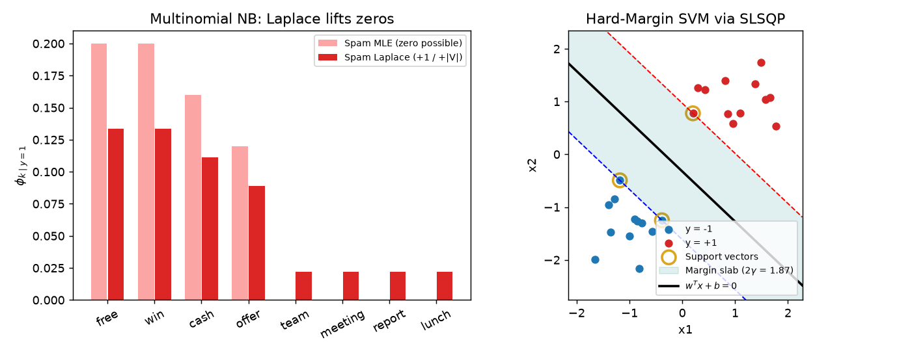

Laplace Smoothing और Support Vector Machines
Theory
इस lecture में: Naive Bayes की zero-frequency problem और Laplace smoothing, text के लिए multinomial event model, फिर Support Vector Machines की शुरुआत: margin का idea, functional और geometric margin, optimal margin classifier, Lagrange duality, KKT conditions, और support vectors।
1. एक line में idea
इस lecture के दो हिस्से हैं।
पहला हिस्सा पिछले lecture की एक कमी ठीक करता है। Naive Bayes में जो शब्द training set में कभी नहीं दिखा, उसकी probability zero निकलती थी और पूरा prediction बिगड़ जाता था। Laplace smoothing का हल बहुत सीधा है: गिनती शुरू करने से पहले मान लो कि हर चीज़ एक बार दिख चुकी है। तब कोई probability ठीक zero नहीं बनती।
दूसरा हिस्सा एक नया classifier शुरू करता है: Support Vector Machine (SVM)। अगर दो classes को कई अलग-अलग lines से अलग किया जा सकता है, तो कौन सी line सबसे अच्छी है? SVM का जवाब: वह line जो दोनों classes के सबसे पास वाले points से जितना हो सके उतनी दूर हो, यानी जिसके दोनों तरफ़ सबसे चौड़ी खाली पट्टी (margin) बचे। ऐसी boundary नए data पर ज़्यादा भरोसेमंद होती है।
2. Laplace Smoothing
Problem: पिछले lecture के estimates अनुपात थे, जैसे \(\phi_{j \mid y=1}\) = (spam emails जिनमें शब्द \(j\) है) / (कुल spam emails)। अगर शब्द \(j\) training set में एक बार भी नहीं आया, तो \(\phi_{j \mid y=1} = \phi_{j \mid y=0} = 0\), और उस शब्द वाले email का posterior \(\frac{0}{0}\) हो जाता है। जो चीज़ अब तक नहीं दिखी, उसे असंभव मान लेना statistically गलत है।
सामान्य रूप: मान लें \(z\) एक multinomial random variable है जो \(\{1, \dots, k\}\) में से कोई value लेता है, और \(\phi_j = p(z = j)\)। \(m\) independent observations \(z^{(1)}, \dots, z^{(m)}\) से maximum likelihood estimate है:
\[\phi_j = \frac{\sum_{i=1}^{m} 1\{z^{(i)} = j\}}{m}\]
Laplace smoothing numerator में 1 और denominator में \(k\) जोड़ता है:
\[\phi_j = \frac{\sum_{i=1}^{m} 1\{z^{(i)} = j\} + 1}{m + k}\]
Denominator में \(k\) इसलिए है कि सारे \(\phi_j\) का जोड़ अब भी 1 रहे: \(\sum_{j=1}^{k} \phi_j = \frac{m + k}{m + k} = 1\)। अब कोई \(\phi_j\) zero नहीं है। \(m\) छोटा हो तो estimates बराबर बँटवारे \(\frac{1}{k}\) की ओर खिंचे रहते हैं। \(m\) बड़ा हो तो \(+1\) और \(+k\) का असर मिट जाता है और estimate वही हो जाता है जो maximum likelihood देता।
Naive Bayes में: हर \(x_j\) binary है, यानी \(k = 2\)। इसलिए
\[\phi_{j \mid y=1} = \frac{\sum_{i=1}^{m} 1\{x_j^{(i)} = 1 \wedge y^{(i)} = 1\} + 1}{\sum_{i=1}^{m} 1\{y^{(i)} = 1\} + 2}, \qquad \phi_{j \mid y=0} = \frac{\sum_{i=1}^{m} 1\{x_j^{(i)} = 1 \wedge y^{(i)} = 0\} + 1}{\sum_{i=1}^{m} 1\{y^{(i)} = 0\} + 2}\]
\(\phi_y\) को आम तौर पर smooth नहीं करते, क्योंकि दोनों classes के examples काफ़ी होते हैं।
3. Text के लिए Multinomial Event Model
पिछला model सिर्फ़ यह देखता था कि शब्द email में है या नहीं। Multinomial event model शब्दों की गिनती का भी इस्तेमाल करता है।
- अब \(x_j\) email के \(j\)-वें स्थान का शब्द है: \(x_j \in \{1, \dots, |V|\}\), जहाँ \(|V|\) vocabulary का size है।
- \(n_i\) शब्दों वाला email एक vector \((x_1^{(i)}, \dots, x_{n_i}^{(i)})\) है। हर email की लंबाई अलग हो सकती है।
- Model की कहानी: पहले \(p(y)\) से तय होता है कि email spam है या नहीं। फिर हर शब्द, बाकी शब्दों से independent, एक ही distribution \(p(x_j \mid y)\) से चुना जाता है। इसलिए \(p(x, y) = p(y) \prod_{j=1}^{n} p(x_j \mid y)\)।
Parameters: \(\phi_y = p(y=1)\), \(\phi_{k \mid y=1} = p(x_j = k \mid y=1)\) और \(\phi_{k \mid y=0} = p(x_j = k \mid y=0)\)। ये \(j\) पर निर्भर नहीं करते: शब्द email में कहाँ आया, इससे फ़र्क नहीं पड़ता।
Likelihood है:
\[\mathcal{L}(\phi_y, \phi_{k \mid y=0}, \phi_{k \mid y=1}) = \prod_{i=1}^{m} p(x^{(i)}, y^{(i)}) = \prod_{i=1}^{m} \left( \prod_{j=1}^{n_i} p(x_j^{(i)} \mid y^{(i)}) \right) p(y^{(i)})\]
इसे maximize करने पर फिर अनुपात मिलते हैं, और Laplace smoothing (\(k = |V|\) संभव values) के साथ:
\[\phi_{k \mid y=1} = \frac{\sum_{i=1}^{m} \sum_{j=1}^{n_i} 1\{x_j^{(i)} = k \wedge y^{(i)} = 1\} + 1}{\sum_{i=1}^{m} 1\{y^{(i)} = 1\}\, n_i + |V|}, \qquad \phi_{k \mid y=0} = \frac{\sum_{i=1}^{m} \sum_{j=1}^{n_i} 1\{x_j^{(i)} = k \wedge y^{(i)} = 0\} + 1}{\sum_{i=1}^{m} 1\{y^{(i)} = 0\}\, n_i + |V|}\]
शब्दों में: \(\phi_{k \mid y=1}\) = (सारे spam emails में शब्द \(k\) कुल कितनी बार आया, \(+1\)) / (सारे spam emails के कुल शब्द, \(+|V|\))। \(+1\) और \(+|V|\) हटा दें तो बिना smoothing वाला maximum likelihood estimate मिलता है।
4. SVM: Margin का Intuition
Logistic Regression में \(p(y=1 \mid x; \theta) = g(\theta^T x)\) था। \(\theta^T x\) जितना बड़ा positive, उतना पक्का कि \(y = 1\)। यानी decision boundary से दूर वाले points पर हमें भरोसा ज़्यादा है, और boundary के पास वाले points पर कम, क्योंकि boundary ज़रा सी हिली तो उनका जवाब बदल जाएगा। इसलिए हम ऐसी boundary चाहते हैं जो सारे training points को सही भी रखे और उनसे दूर भी रहे।
Notation (SVM के लिए बदला हुआ):
| Symbol | मतलब |
|---|---|
| \(y \in \{-1, +1\}\) | class labels (\(\{0, 1\}\) की जगह) |
| \(w\), \(b\) | parameters: \(w\) weights का vector, \(b\) intercept (\(\theta_0\) की जगह) |
| \(h_{w,b}(x) = g(w^T x + b)\) | classifier, जहाँ \(g(z) = 1\) अगर \(z \ge 0\), वरना \(-1\) |
यह classifier सीधे \(+1\) या \(-1\) देता है, probability नहीं।
5. Functional और Geometric Margin
Functional margin. एक training example \((x^{(i)}, y^{(i)})\) के लिए
\[\hat{\gamma}^{(i)} = y^{(i)} \left( w^T x^{(i)} + b \right)\]
अगर \(y^{(i)} = 1\) है तो हम चाहते हैं कि \(w^T x^{(i)} + b\) बड़ा positive हो; अगर \(y^{(i)} = -1\) है तो बड़ा negative। दोनों cases में \(\hat{\gamma}^{(i)}\) बड़ा positive होना अच्छा है, और \(\hat{\gamma}^{(i)} > 0\) का मतलब है कि prediction सही है। पूरे training set का functional margin सबसे खराब example का है: \(\hat{\gamma} = \min_i \hat{\gamma}^{(i)}\)।
इसमें एक कमी है। \((w, b)\) को \((2w, 2b)\) कर दें तो \(g\) सिर्फ़ sign देखता है, इसलिए classifier बिल्कुल नहीं बदलता, पर \(\hat{\gamma}\) दुगना हो जाता है। यानी functional margin को बिना कुछ सुधारे जितना चाहें बढ़ाया जा सकता है।
Geometric margin. यह point की boundary से असली दूरी है। पहले ध्यान दें कि \(w\) boundary के perpendicular है: boundary पर के किन्हीं दो points \(x_a, x_b\) के लिए \(w^T x_a + b = 0 = w^T x_b + b\), इसलिए \(w^T(x_a - x_b) = 0\)।
मान लें \(y^{(i)} = 1\) है और \(x^{(i)}\) की boundary से दूरी \(\gamma^{(i)}\) है। \(x^{(i)}\) से \(w\) की उल्टी दिशा में \(\gamma^{(i)}\) चलें तो boundary पर का सबसे पास वाला point मिलता है: \(x^{(i)} - \gamma^{(i)} \frac{w}{\|w\|}\)। यह boundary पर है, इसलिए
\[w^T \left( x^{(i)} - \gamma^{(i)} \frac{w}{\|w\|} \right) + b = 0\]
\(w^T w = \|w\|^2\) का इस्तेमाल करके \(\gamma^{(i)}\) के लिए हल करें:
\[w^T x^{(i)} + b - \gamma^{(i)} \|w\| = 0 \quad\Longrightarrow\quad \gamma^{(i)} = \left( \frac{w}{\|w\|} \right)^T x^{(i)} + \frac{b}{\|w\|}\]
दोनों classes के लिए एक साथ लिखें तो:
\[\gamma^{(i)} = y^{(i)} \left( \left( \frac{w}{\|w\|} \right)^T x^{(i)} + \frac{b}{\|w\|} \right) = \frac{\hat{\gamma}^{(i)}}{\|w\|}\]
\((w, b)\) को किसी भी positive संख्या से गुणा करें, \(\gamma^{(i)}\) नहीं बदलता। \(\|w\| = 1\) हो तो दोनों margins बराबर हैं। पूरे training set के लिए \(\gamma = \min_i \gamma^{(i)}\)।
6. Optimal Margin Classifier
मान लें data linearly separable है। हमें वह \((w, b)\) चाहिए जिसका geometric margin सबसे बड़ा हो। इसे तीन कदमों में एक आसान optimization problem में बदलते हैं।
रूप 1. सीधा बयान। \(\|w\| = 1\) रखने से functional और geometric margin एक हो जाते हैं:
\[\max_{\gamma, w, b}\ \gamma \quad \text{s.t.} \quad y^{(i)}(w^T x^{(i)} + b) \ge \gamma,\ \ i = 1, \dots, m; \qquad \|w\| = 1\]
दिक्कत: \(\|w\| = 1\) एक non-convex constraint है (एक गोले की सतह)।
रूप 2. \(\gamma = \hat{\gamma} / \|w\|\) लिखकर वह constraint हटा दें:
\[\max_{\hat{\gamma}, w, b}\ \frac{\hat{\gamma}}{\|w\|} \quad \text{s.t.} \quad y^{(i)}(w^T x^{(i)} + b) \ge \hat{\gamma},\ \ i = 1, \dots, m\]
दिक्कत: अब objective \(\frac{\hat{\gamma}}{\|w\|}\) non-convex है।
रूप 3. \((w, b)\) को scale करने की आज़ादी का इस्तेमाल करें। Scale बदलने से classifier नहीं बदलता, इसलिए हम scale ऐसा चुन सकते हैं कि \(\hat{\gamma} = 1\) हो। तब \(\frac{1}{\|w\|}\) को maximize करना है, जो \(\|w\|^2\) को minimize करने के बराबर है:
\[\min_{w, b}\ \frac{1}{2} \|w\|^2 \quad \text{s.t.} \quad y^{(i)}(w^T x^{(i)} + b) \ge 1,\ \ i = 1, \dots, m\]
यह एक convex quadratic objective और linear constraints वाला problem है (quadratic program, QP), जिसका एक ही global हल होता है। इसका हल optimal margin classifier है, और उसका geometric margin \(\gamma = \frac{1}{\|w\|}\) है।
7. Lagrange Duality
इस QP को सीधे भी हल कर सकते हैं। पर इसका dual रूप निकालने से दो बड़े फ़ायदे मिलेंगे (support vectors और kernels), इसलिए पहले constrained optimization का सामान्य सिद्धांत देखते हैं।
Primal problem:
\[\min_{w}\ f(w) \quad \text{s.t.} \quad g_i(w) \le 0,\ \ i = 1, \dots, k; \qquad h_i(w) = 0,\ \ i = 1, \dots, l\]
Generalized Lagrangian: हर constraint के लिए एक Lagrange multiplier (\(\alpha_i\) और \(\beta_i\)) लेकर constraints को objective में मिला दें:
\[\mathcal{L}(w, \alpha, \beta) = f(w) + \sum_{i=1}^{k} \alpha_i\, g_i(w) + \sum_{i=1}^{l} \beta_i\, h_i(w)\]
अब यह देखें: \(\theta_{\mathcal{P}}(w) = \max_{\alpha, \beta\,:\,\alpha_i \ge 0} \mathcal{L}(w, \alpha, \beta)\)। अगर \(w\) कोई constraint तोड़ता है (\(g_i(w) > 0\) या \(h_i(w) \ne 0\)), तो उस \(\alpha_i\) या \(\beta_i\) को बहुत बड़ा करके \(\mathcal{L}\) को \(\infty\) तक ले जा सकते हैं। अगर \(w\) सारे constraints मानता है, तो सबसे अच्छा यही है कि हर \(\alpha_i g_i(w) = 0\) रहे, और तब max ठीक \(f(w)\) है:
\[\theta_{\mathcal{P}}(w) = \begin{cases} f(w) & \text{अगर } w \text{ सारे constraints मानता है} \\ \infty & \text{वरना} \end{cases}\]
इसलिए primal problem को ऐसे लिख सकते हैं: \(p^* = \min_w \theta_{\mathcal{P}}(w) = \min_w \max_{\alpha, \beta\,:\,\alpha_i \ge 0} \mathcal{L}(w, \alpha, \beta)\)।
Dual problem: min और max का क्रम बदल दें। \(\theta_{\mathcal{D}}(\alpha, \beta) = \min_w \mathcal{L}(w, \alpha, \beta)\) लें, और
\[d^* = \max_{\alpha, \beta\,:\,\alpha_i \ge 0} \theta_{\mathcal{D}}(\alpha, \beta) = \max_{\alpha, \beta\,:\,\alpha_i \ge 0}\ \min_w\ \mathcal{L}(w, \alpha, \beta)\]
\(d^* \le p^*\) हमेशा (weak duality). कोई भी \(w'\) और कोई भी \(\alpha' \ge 0, \beta'\) लें। तब
\[\theta_{\mathcal{D}}(\alpha', \beta') = \min_w \mathcal{L}(w, \alpha', \beta') \ \le\ \mathcal{L}(w', \alpha', \beta') \ \le\ \max_{\alpha, \beta\,:\,\alpha_i \ge 0} \mathcal{L}(w', \alpha, \beta) = \theta_{\mathcal{P}}(w')\]
बायाँ पक्ष हर \((\alpha', \beta')\) के लिए दाएँ पक्ष के हर \(w'\) से छोटा या बराबर है, इसलिए बाएँ का max भी दाएँ के min से छोटा या बराबर है: \(d^* \le p^*\)।
बराबरी कब? अगर \(f\) और सारे \(g_i\) convex हों, \(h_i\) affine हों, और कोई \(w\) ऐसा हो जिसके लिए सारे \(g_i(w) < 0\) हों, तो \(d^* = p^*\)। तब ऐसे \(w^*, \alpha^*, \beta^*\) मौजूद हैं जो primal और dual दोनों के हल हैं, और वे Karush-Kuhn-Tucker (KKT) conditions पूरी करते हैं:
\[\begin{aligned} \frac{\partial}{\partial w_i} \mathcal{L}(w^*, \alpha^*, \beta^*) &= 0, & i &= 1, \dots, n \\ \frac{\partial}{\partial \beta_i} \mathcal{L}(w^*, \alpha^*, \beta^*) &= 0, & i &= 1, \dots, l \\ \alpha_i^*\, g_i(w^*) &= 0, & i &= 1, \dots, k \\ g_i(w^*) &\le 0, & i &= 1, \dots, k \\ \alpha_i^* &\ge 0, & i &= 1, \dots, k \end{aligned}\]
उल्टा भी सच है: जो \(w^*, \alpha^*, \beta^*\) ये conditions पूरी करें, वे हल हैं। तीसरी condition complementary slackness कहलाती है: हर \(i\) के लिए या तो \(\alpha_i^* = 0\) है, या \(g_i(w^*) = 0\) (constraint "active" है, यानी ठीक बराबरी पर)। अगर \(\alpha_i^* > 0\), तो constraint ज़रूर active है।
छोटा उदाहरण: \(f(w) = w^2\) को minimize करें, शर्त \(w \ge 1\), यानी \(g(w) = 1 - w \le 0\)। साफ़ है कि \(w^* = 1\) और \(p^* = 1\)। अब dual से: \(\mathcal{L}(w, \alpha) = w^2 + \alpha(1 - w)\)। \(w\) पर minimize करें: \(2w - \alpha = 0\), यानी \(w = \frac{\alpha}{2}\), और \(\theta_{\mathcal{D}}(\alpha) = \alpha - \frac{\alpha^2}{4}\)। इसे maximize करें: \(\alpha^* = 2\) और \(d^* = 1 = p^*\)। यहाँ \(\alpha^* > 0\) है और constraint active है (\(w^* = 1\)), जैसा complementary slackness कहता है।
8. Support Vectors
Optimal margin classifier के constraints को \(g_i(w) \le 0\) के रूप में लिखें:
\[g_i(w, b) = -y^{(i)}(w^T x^{(i)} + b) + 1 \le 0\]
हर training example का एक constraint और एक \(\alpha_i\) है। Complementary slackness कहता है कि \(\alpha_i > 0\) सिर्फ़ तब हो सकता है जब \(g_i(w, b) = 0\), यानी जब उस example का functional margin ठीक 1 हो। ये वही points हैं जो boundary के सबसे पास हैं और margin की पट्टी के किनारे पर बैठे हैं। इन्हें support vectors कहते हैं। बाकी सारे points के लिए \(\alpha_i = 0\) है।
आम तौर पर support vectors बहुत कम होते हैं। और हल सिर्फ़ उन्हीं पर टिका होता है: किसी दूसरे point को (margin के बाहर रखते हुए) हिलाएँ या हटा दें, तो boundary नहीं बदलती।
इस problem का Lagrangian (सिर्फ़ \(\alpha_i\) हैं, क्योंकि equality constraints नहीं हैं) यह है:
\[\mathcal{L}(w, b, \alpha) = \frac{1}{2} \|w\|^2 - \sum_{i=1}^{m} \alpha_i \left[ y^{(i)}(w^T x^{(i)} + b) - 1 \right]\]
आगे क्या: अगले lecture (Lecture 7) में हम इस \(\mathcal{L}\) को \(w\) और \(b\) पर minimize करके dual problem निकालेंगे। उसमें data सिर्फ़ inner products \(\langle x^{(i)}, x^{(j)} \rangle\) के रूप में आएगा, जिससे kernels का रास्ता खुलता है। वहीं non-separable data के लिए soft margin और dual को हल करने वाला SMO algorithm भी आएगा।
9. Practical बातें और आम गलतियाँ
- Denominator में सही \(k\) जोड़ें: Laplace smoothing में numerator में 1 जुड़ता है और denominator में संभव values की संख्या: Bernoulli Naive Bayes में 2, multinomial event model में \(|V|\)। Denominator में भी 1 जोड़ देना आम गलती है; तब probabilities का जोड़ 1 नहीं रहता।
- Vocabulary से बाहर के शब्द: जो शब्द vocabulary में ही नहीं है, उसके लिए कोई parameter नहीं है। उसे छोड़ दें या एक खास "unknown" token में गिनें। Laplace smoothing उन शब्दों के लिए है जो vocabulary में हैं पर किसी class में नहीं दिखे।
- Logs जोड़ें: लंबे email में सैकड़ों छोटी probabilities का product underflow हो जाता है। \(\log p(y) + \sum_j \log \phi_{x_j \mid y}\) की तुलना करें।
- SVM में labels \(\pm 1\) रखें: margin के सारे formulas \(y \in \{-1, +1\}\) मानकर बने हैं। \(\{0, 1\}\) labels के साथ वे गलत हो जाते हैं।
- Features को scale करें: margin एक दूरी है। अगर एक feature हज़ारों में है और दूसरा इकाइयों में, तो दूरी पर बड़ा feature हावी हो जाता है।
- Hard margin सिर्फ़ separable data के लिए: data separable न हो तो इस QP का कोई feasible हल ही नहीं है। और separable data में भी एक अकेला outlier boundary को बहुत घुमा सकता है। इसका इलाज soft margin है (Lecture 7)।
10. खुद से पूछें
- एक पासा 10 बार फेंका गया और 6 एक बार भी नहीं आया। \(p(6)\) का maximum likelihood estimate क्या है, और Laplace smoothing वाला estimate क्या है?
- \((w, b)\) की जगह \((5w, 5b)\) रख दें। Decision boundary, functional margin और geometric margin में से क्या-क्या बदलेगा और कितना?
- Optimal margin classifier में किसी training example का functional margin 3.7 है। उसका \(\alpha_i\) क्या होगा, और क्यों? अगर उस example को training set से हटा दें तो हल पर क्या असर होगा?
3D Animations



क्या देखें: यहाँ multinomial event model के शब्द-अनुमान \(\phi_{k \mid y}\) को 3D bars के रूप में दिखाया गया है। शुरू में बिना smoothing के (\(\lambda = 0\)) जो शब्द किसी class में एक बार भी नहीं दिखे, उनके नारंगी bars फ़र्श पर ठीक zero पर चिपके हैं। जैसे-जैसे आप Laplace smoothing (\(\lambda \to 1\)) लागू करते हैं, हर numerator में \(1\) और denominator में \(|V|\) जुड़ने से zero वाले bars ऊपर उठ जाते हैं। कुल जोड़ \(1\) बनाए रखने के लिए ऊँचे bars थोड़े नीचे आते हैं और किसी भी नए संदेश की probability \(0/0\) नहीं बनती।



क्या देखें: यहाँ 3D features वाले दो अलग-अलग classes के बिंदु हैं जिन्हें कई planes अलग कर सकते हैं। शुरू वाला plane डेटा को अलग तो करता है, पर बिंदुओं के बहुत पास से गुज़रता है इसलिए दोनों तरफ़ की खाली पट्टी (margin slab) बहुत पतली है। जैसे-जैसे optimization \(\frac{1}{2}\|w\|^2\) को घटाता है, plane घूमकर बीच में जमता है और geometric margin \(\gamma = 1/\|w\|\) बढ़ता जाता है। अंत में सबसे चौड़ी पट्टी दोनों तरफ़ के सबसे पास वाले बिंदुओं (support vectors) पर टिक जाती है।



क्या देखें: फ़र्श (\(z = 0\)) पर 2D data points और काली decision boundary \(w^T x + b = 0\) है, जबकि ऊँचाई score \(z = w^T x + b\) दिखाती है। जब आप \((w, b)\) को \(c\) से गुणा करके बड़ा करते हैं, तो नीला plane उसी काली रेखा पर कब्ज़े की तरह घूमकर और खड़ा होता जाता है, पर boundary ज़रा भी नहीं हिलती। नारंगी खंभा functional margin \(\hat{\gamma}\) है जो \(c\) के साथ लंबा होता जाता है। फ़र्श पर हरी रेखा geometric margin \(\gamma = \hat{\gamma}/\|w\|\) है, जो हर scale पर बिल्कुल स्थिर रहती है।



क्या देखें: यहाँ ज़मीन पर weights \((w_1, w_2)\) हैं और कटोरे की ऊँचाई primal objective \(\frac{1}{2}\|w\|^2\) है। बिना constraints के कटोरे की तली \((0, 0)\) पर है, पर खड़ी रंगीन दीवारें \(y^{(i)} w^T x^{(i)} = 1\) उसे infeasible बना देती हैं। जैसे-जैसे dual ascent \(\alpha\) को बढ़ाता है, बिंदु \(w(\alpha)\) कटोरे पर चढ़ता हुआ दोनों active दीवारों के कोने वाले constrained minimum (हरा तारा) पर पहुँचता है जहाँ \(d^* = p^*\) होता है। पीछे छूटी धूसर दीवार के लिए complementary slackness से \(\alpha_3 = 0\) हो जाता है।



क्या देखें: यहाँ सोने के छल्लों वाले बिंदु support vectors (\(\alpha_i > 0\)) हैं जो margin की दीवार पर बैठे हैं। पहले हिस्से में नारंगी interior बिंदु को margin के बाहर दूर-दूर तक घुमाया जाता है, और हर कदम पर QP दोबारा हल करने पर भी \(\alpha_k = 0\) रहता है तथा plane ज़रा भी नहीं हिलता। दूसरे हिस्से में जब वही बिंदु नीचे उतरकर margin के भीतर आता है, तो उसका \(\alpha_k > 0\) हो जाता है। अब वह खुद नया support vector बनकर पूरे separating plane को झुका देता है।
Python Example
इसे खुद चलाएँ: cs229_hindi/.venv/bin/python cs229_hindi/chapters/L06_laplace_svm/example.py
"""Lecture 6 example: Multinomial Naive Bayes (Laplace smoothing) और Hard-Margin Linear SVM. भाग A: हाथ से लिखे छोटे corpus पर Multinomial Event Model, बिना smoothing और Laplace smoothing के साथ। भाग B: Linearly separable 2D data पर scipy.optimize SLSQP से Hard-Margin SVM (w, b, margin, support vectors)। """ import numpy as np import matplotlib.pyplot as plt from scipy.optimize import minimize # ---------- 1. भाग A: Multinomial Naive Bayes (बिना smoothing बनाम Laplace smoothing) ---------- spam_docs = [ "win free cash win cash now", "free offer win prize now", "cash prize free free offer", "win cheap cash offer now", "free prize win money", ] ham_docs = [ "team meeting at noon", "project report before meeting", "lunch at noon with team", "review project report today", "free for team lunch today", ] vocab = sorted({w for doc in spam_docs + ham_docs for w in doc.split()}) word_to_id = {w: k for k, w in enumerate(vocab)} V = len(vocab) def word_counts(docs): """हर शब्द सारे documents में कुल कितनी बार आया (multinomial event model)।""" counts = np.zeros(V) for doc in docs: for w in doc.split(): if w in word_to_id: # vocabulary से बाहर के शब्द छोड़ दें counts[word_to_id[w]] += 1 return counts c_spam, c_ham = word_counts(spam_docs), word_counts(ham_docs) n_spam, n_ham = c_spam.sum(), c_ham.sum() phi_y = len(spam_docs) / (len(spam_docs) + len(ham_docs)) # MLE (smoothing = 0) और Laplace smoothing (numerator में +1, denominator में +|V|) phi_spam_mle, phi_ham_mle = c_spam / n_spam, c_ham / n_ham phi_spam_lap = (c_spam + 1.0) / (n_spam + V) phi_ham_lap = (c_ham + 1.0) / (n_ham + V) def predict_mle(doc): ids = [word_to_id[w] for w in doc.split() if w in word_to_id] p1 = phi_y * np.prod(phi_spam_mle[ids]) p0 = (1.0 - phi_y) * np.prod(phi_ham_mle[ids]) with np.errstate(invalid="ignore"): return p1 / (p1 + p0) def predict_laplace(doc): """Underflow से बचने के लिए log-probabilities जोड़ें।""" ids = [word_to_id[w] for w in doc.split() if w in word_to_id] log1 = np.log(phi_y) + np.sum(np.log(phi_spam_lap[ids])) log0 = np.log(1.0 - phi_y) + np.sum(np.log(phi_ham_lap[ids])) m = max(log1, log0) return float(np.exp(log1 - m) / (np.exp(log1 - m) + np.exp(log0 - m))) print(f"भाग A: Multinomial Naive Bayes (|V| = {V}, spam words = {int(n_spam)}, ham words = {int(n_ham)})") print(f" Laplace probabilities का जोड़: spam = {phi_spam_lap.sum():.4f}, ham = {phi_ham_lap.sum():.4f}") print(" word c(spam) c(ham) MLE(y=1) MLE(y=0) Lap(y=1) Lap(y=0)") for w in ("free", "win", "cash", "team", "meeting"): k = word_to_id[w] print(f" {w:<10} {int(c_spam[k]):6d} {int(c_ham[k]):6d} {phi_spam_mle[k]:8.3f} {phi_ham_mle[k]:8.3f}" f" {phi_spam_lap[k]:8.3f} {phi_ham_lap[k]:8.3f}") print("\n Test संदेश MLE P(spam|x) Laplace P(spam|x)") for msg in ["win free cash cash", "team project report", "free team lunch", "win prize at meeting"]: print(f" {msg:<35} {predict_mle(msg):13.4f} {predict_laplace(msg):17.4f}") # ---------- 2. भाग B: Hard-Margin Linear SVM (scipy.optimize SLSQP) ---------- rng = np.random.default_rng(11) X_neg = rng.normal(loc=[-1.2, -1.2], scale=0.52, size=(12, 2)) X_pos = rng.normal(loc=[1.2, 1.2], scale=0.52, size=(12, 2)) X = np.vstack([X_neg, X_pos]) y = np.r_[-np.ones(len(X_neg)), np.ones(len(X_pos))] def solve_hard_margin_svm(X_data, y_data): """Primal QP: min_{w,b} 0.5*||w||^2 s.t. y^(i)*(w^T x^(i) + b) - 1 >= 0.""" res = minimize( lambda u: 0.5 * np.dot(u[:2], u[:2]), np.zeros(3), jac=lambda u: np.array([u[0], u[1], 0.0]), constraints={"type": "ineq", "fun": lambda u: y_data * (X_data @ u[:2] + u[2]) - 1.0, "jac": lambda u: np.c_[y_data[:, None] * X_data, y_data]}, method="SLSQP", options={"ftol": 1e-12, "maxiter": 300}, ) return res.x[:2], float(res.x[2]) w, b = solve_hard_margin_svm(X, y) Q = (y[:, None] * X) @ (y[:, None] * X).T dual = minimize( lambda a: 0.5 * a @ Q @ a - np.sum(a), np.zeros(len(y)), jac=lambda a: Q @ a - 1.0, bounds=[(0.0, None)] * len(y), constraints={"type": "eq", "fun": lambda a: a @ y, "jac": lambda a: y}, method="SLSQP", options={"ftol": 1e-12, "maxiter": 300}, ) alpha = np.maximum(0.0, dual.x) func_margins = y * (X @ w + b) gamma = 1.0 / np.linalg.norm(w) sv_idx = np.where(func_margins <= 1.0 + 1e-5)[0] # एक non-support point को हिलाकर जाँचें कि hyperplane बदलता है या नहीं interior_id = int(np.argmax(func_margins)) X_moved = X.copy() X_moved[interior_id] += np.array([0.8, 0.7]) w_moved, b_moved = solve_hard_margin_svm(X_moved, y) print("\nभाग B: Hard-Margin Linear SVM (SLSQP)") print(f" w = [{w[0]:.4f}, {w[1]:.4f}], b = {b:.4f}, ||w|| = {np.linalg.norm(w):.4f}") print(f" Geometric margin gamma = 1/||w|| = {gamma:.4f} (slab width 2*gamma = {2 * gamma:.4f})") print(f" Strong duality check: primal p* = {0.5 * (w @ w):.6f}, dual d* = {-dual.fun:.6f}") print(f" Support vectors ({len(sv_idx)} of {len(y)} points, जहाँ y*(w^T x + b) = 1 और alpha_i > 0):") for idx in sv_idx: print(f" idx={idx:2d} x=({X[idx, 0]:6.3f}, {X[idx, 1]:6.3f}) y={int(y[idx]):+d}" f" func_margin={func_margins[idx]:.4f} alpha={alpha[idx]:.4f}") print(f" Non-SV point (idx={interior_id}) को हिलाने पर ||w_new - w|| = {np.linalg.norm(w_moved - w):.2e}") # ---------- 3. Plots ---------- fig, axes = plt.subplots(1, 2, figsize=(10.6, 4.2)) words_show = ["free", "win", "cash", "offer", "team", "meeting", "report", "lunch"] ids_show = [word_to_id[wd] for wd in words_show] xpos = np.arange(len(words_show)) axes[0].bar(xpos - 0.18, phi_spam_mle[ids_show], width=0.34, color="#fca5a5", label="Spam MLE (zero possible)") axes[0].bar(xpos + 0.18, phi_spam_lap[ids_show], width=0.34, color="#dc2626", label="Spam Laplace (+1 / +|V|)") axes[0].set_xticks(xpos, words_show, rotation=28) axes[0].set(ylabel=r"$\phi_{k \mid y=1}$", title="Multinomial NB: Laplace lifts zeros") axes[0].legend(fontsize=8) ax = axes[1] ax.scatter(*X[y == -1].T, color="tab:blue", s=34, label="y = -1") ax.scatter(*X[y == 1].T, color="tab:red", s=34, label="y = +1") ax.scatter(*X[sv_idx].T, s=135, facecolors="none", edgecolors="goldenrod", linewidths=2.0, label="Support vectors") xs = np.linspace(X[:, 0].min() - 0.5, X[:, 0].max() + 0.5, 200) y_mid = -(w[0] * xs + b) / w[1] y_up, y_dn = -(w[0] * xs + b - 1.0) / w[1], -(w[0] * xs + b + 1.0) / w[1] ax.fill_between(xs, y_dn, y_up, color="teal", alpha=0.12, label=rf"Margin slab ($2\gamma$ = {2 * gamma:.2f})") ax.plot(xs, y_mid, "k-", lw=2.0, label=r"$w^T x + b = 0$") ax.plot(xs, y_up, "r--", lw=1.1) ax.plot(xs, y_dn, "b--", lw=1.1) ax.set(xlim=(xs[0], xs[-1]), ylim=(X[:, 1].min() - 0.6, X[:, 1].max() + 0.6), xlabel="x1", ylabel="x2", title="Hard-Margin SVM via SLSQP", aspect="equal") ax.legend(fontsize=7.8, loc="lower right") fig.tight_layout() fig.savefig("result.png", dpi=130)
भाग A: Multinomial Naive Bayes (|V| = 20, spam words = 25, ham words = 22)
Laplace probabilities का जोड़: spam = 1.0000, ham = 1.0000
word c(spam) c(ham) MLE(y=1) MLE(y=0) Lap(y=1) Lap(y=0)
free 5 1 0.200 0.045 0.133 0.048
win 5 0 0.200 0.000 0.133 0.024
cash 4 0 0.160 0.000 0.111 0.024
team 0 3 0.000 0.136 0.022 0.095
meeting 0 2 0.000 0.091 0.022 0.071
Test संदेश MLE P(spam|x) Laplace P(spam|x)
win free cash cash 1.0000 0.9971
team project report 0.0000 0.0221
free team lunch 0.0000 0.1689
win prize at meeting nan 0.6693
भाग B: Hard-Margin Linear SVM (SLSQP)
w = [0.7354, 0.7738], b = 0.2508, ||w|| = 1.0675
Geometric margin gamma = 1/||w|| = 0.9367 (slab width 2*gamma = 1.8735)
Strong duality check: primal p* = 0.569813, dual d* = 0.569813
Support vectors (3 of 24 points, जहाँ y*(w^T x + b) = 1 और alpha_i > 0):
idx= 0 x=(-1.182, -0.493) y=-1 func_margin=1.0000 alpha=0.5033
idx= 5 x=(-0.385, -1.250) y=-1 func_margin=1.0000 alpha=0.0666
idx=12 x=( 0.201, 0.777) y=+1 func_margin=1.0000 alpha=0.5698
Non-SV point (idx=18) को हिलाने पर ||w_new - w|| = 0.00e+00
